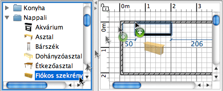

|
|
B�tor hozz�ad�sa | ||
|
B�tor, ajt� vagy ablak hozz�ad�s�n�l v�lasszon ki egy t�rgyat, vagy ak�r t�bbet is a Katal�gusb�l �s h�zza be az Alaprajz ablakba, vagy a B�torlist�ba.
 �gy is hozz�adhat b�torokat (ak�r egyszerre egyn�l t�bbet) otthon�hoz, ha kijel�li a men�ben a B�tor > Hozz�ad�s az otthonhoz pontot, vagy haszn�lhatja a Hozz�ad�s az otthonhoz eszk�zt is.
Ha a b�torokat a B�torlist�ba h�zza vagy a
B�tor > Hozz�ad�s az otthonhoz men�t haszn�lja, akkor a b�tor bal fels�
sarka a (0,0) pontokn�l lesz. Az otthonhoz hozz�adott b�torok megjelennek a B�torlist�ban, az Alaprajz n�zetben, �s a 3D n�zetben is. Am�g a 3D n�zet bet�lt, addig ezek feh�r sz�n� kock�kk�nt lesznek l�that�ak. |
|